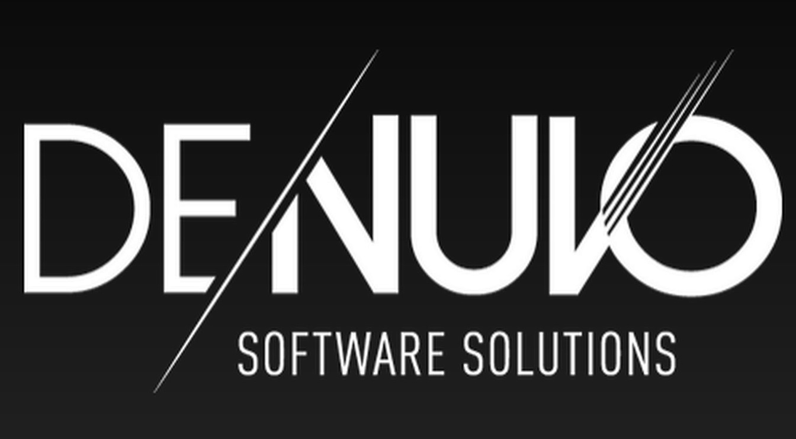

Internetové Pirátství
Internetové pirátství spočívá v získáni softwaru, filmu, nebo seriálu zdarma porušením autorských práv.
Nejčastěji se používá na pirátství P2P protokol BitTorent.
Takzvaní "piráti" pak nemusí platit za server na odesílání souborů a potom co si ho někdo přes torrent stáhne tak ho automaticky
začne posílat dalším lidem a zajistí tím dostupnost pro další piráty.
"Zavirovaný program porušující autorská práva není pirátství, ale podvod"
Potřebný software
- qBitTorrent na stažení souboru
- doplněk do prohlížeče uBlock Origin na blokování reklam, kterých jsou některé pirátské stránky plné, aby pokryly nájem webového serveru
- VPN s podporou P2P (někteří poskytovatelé internetu jsou placeni, aby nahlašovali uživatelé, kteří porušují autorská práva
- BitTorrentový soubor, který bývá velmi malý a obsahuje informace ke stažení daného souboru
Za pirátství se považuje i obcházení programů pro zachování digitálních autorský práv například Denuva

Nevýhody a nebezpečí pirátství
- Bez VPN vám může přijít e-mail od poskytovatele internetu ať s pirátstvím přestanete, jinak vám odpojí internet, nebo ještě hůř vám "zaťukají na dveře"
- Pokud jde o program, tak může být zavirovaný. Například ze stránek:
- steamunlocked
- gog_unlocked
- PC_Games_Torrents
- igg_games
- nosTEAM
- OceanOfGames / OceanOfAPKs
- TLauncher (navíc nepoužívá Torrent)
- Některé zavirované programy zařadí váš počítač do botnetu, který bude
buť pořádat DDoS útoky, nebo do takzvané residental proxy a lidé můžou platit útočníkovi za maskování se pod vaší IP Adresou
Zpět na hlavní stránku